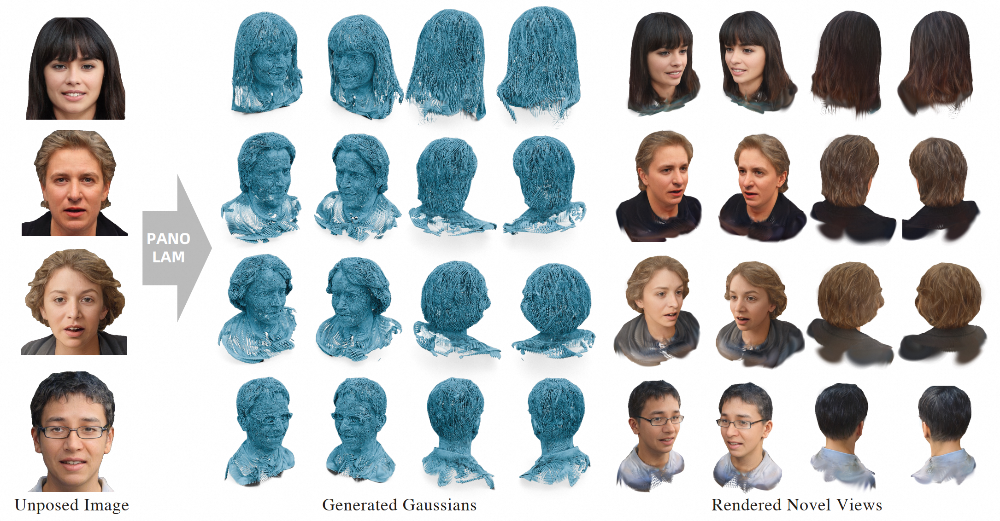

Yingdong Hu🎓 Phd Student
The Hong Kong University of Science and Technology
|
|


Biography
Hi, this is Yingdong Hu. I am a third-year (2023~) Ph.D. student in Electronic and Computer Engineering department, the Hong Kong University of Science and Technology (HKUST), advised by Prof. Jun ZHANG. I obtained my B.Eng in Automation at Zhejiang University in 2023.
My research focuses on Causal 3D/4D Reconstruction and Generation, e.g., feed forward 3D/4D reconstruction, autoregressive multi-view generation, holographic communication.
News
- [01/2026] Our paper Mon3tr is released!
- [12/2025] Our paper LocoMoco is released!
- [12/2025] I am serving as a Reviewer for CVPR 2026 !
- [09/2025] Our paper Forge4D is released!
- [08/2025] Our paper EVA-Gaussian is accepted by the 1st ICCV E2E3D workshop!
- [08/2025] I am serving as a Reviewer for 3DV 2026 !
- [05/2025] Joined Alibaba Tongyi Lab as research intern !
- [04/2025] I am serving as a Reviewer for ICCV 2025 !
- [09/2024] I pass the PQE and become a PhD candidate !
- [09/2024] I am serving as a Reviewer for ICLR 2025 !
- [09/2024] Our paper EVA-Gaussian is released!
- [09/2023] Started my Ph.D study in Hong Kong University of Science and Technology !
- [06/2023] Graduated from Zhejiang University !
Industrial Experience

|
Alibaba May. 2025 - Apr. 2026, Tongyi Lab Topic: 3D/4D Human Reconstruction and Animation |
Education & Visiting

|
The Hong Kong University of Science and Technology, Hong Kong PhD Student in iComAI Lab, HKUST Advisor: Prof. Jun Zhang Sep. 2023 - Future
|
|
Zhejiang University, China Bachelor of Engineering in Automation Sep. 2019 - Jun. 2023
|
|
Publications | Full List
| /*Preprints*/ | |
|
🎉 Forge4D: Feed-Forward 4D Human Reconstruction and Interpolation from Uncalibrated Sparse Videos Yingdong Hu*, Yisheng He*†, Jinnan Chen, Weihao Yuan, Kejie Qiu, Zehong Lin, Siyu Zhu, Zilong Dong, Jun Zhang arXiv preprint:2509.24209. 2025 [paper] [code] [project page] [video]
|
|
|  |
🎉 PanoLAM: Large Avatar Model for Gaussian Full-Head Synthesis from One-shot Unposed Image Peng Li, Yisheng He, Yingdong Hu, Yuan Dong, Weihao Yuan, Yuan Liu, Zilong Dong, Yike Guo arXiv preprint:2509.07552. 2025[paper] [project page] |

|
🎉 Dynamics-Aware Gaussian Splatting Streaming Towards Fast On-the-Fly Training for 4D Reconstruction Zhening Liu, Yingdong Hu, Xinjie Zhang, Jiawei Shao, Zehong Lin, Jun Zhang arXiv preprint:2411.14847. 2024 |
| /*Conference*/ | |
|
WRF-GS: Wireless Radiation Field Reconstruction with 3D Gaussian Splatting Chaozheng Wen, Jinwen Tong, Yingdong Hu, Zehong Lin, Jun Zhang IEEE International Conference on Computer Communications(INFOCOM), 2025 |
|

|
EVA-Gaussian: 3D Gaussian-Based Real-time Human Novel View Synthesis Under Diverse Camera Settings Yingdong Hu, Zhening Liu, Jiawei Shao, Zehong Lin, Jun Zhang The 1th ICCV E2E3D Workshop (ICCVW), 2025 [paper] [code] [project page] [video]
|


Honors & Awards
| [09/2023] Graduate Studentship in HKUST. |
Professional Services
-
Student Reviewers:
Conference on Computer Vision and Pattern Recognition (CVPR)
International Conference on Learning Representations (ICLR)
International Conference on Computer Vision (ICCV)
European Conference on Computer Vision (ECCV)
International Conference on 3D Vision (3DV)
Teaching Assistant
| 2024-2025 | Fall&Spring | Electronic and Information Technology (HKUST, ELEC1010) |
| 2023-2024 | Spring | Introduction to Electro-Robot Design, (HKUST, ELEC1100) |